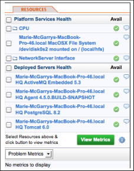
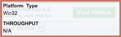

- Resources Minitab
- Resource Lists in the Resources Minitab
- Availability Icons in the Resources Minitab
- Availability Details in the Resources Minitab
- Metric Summaries in the Resources Minitab
- View Metric Data for Related Resources in the Resources Minitab
- Use Controls and Popup Options in the Resources Minitab
- Filter Metrics by Category and Value Type
Resources Minitab
The Resources minitab for a resource in the Resource Hub lists the resources with which the current resource has a parent or child relationship, as shown in the screenshot below.

Resource Lists in the Resources Minitab
| For a.... | the Resource minitab lists these related resources.... |
|---|---|
| Platform |
|
| Server |
|
| Service |
|
| Compatible Group | Group Members --- List of resources in the group, and either:
|
| Applications |
|
Availability Icons in the Resources Minitab
The color of the icon in the Availability column indicates the current availability status of the resource, or the resource group.
| Availability Icon Color | Availability Icon | State | Definition |
|---|---|---|---|
| Green |  |
Up | For an individual resource, indicates that its availability status is "up". For a group, indicates that none of the group members has availability status of "down". |
| Yellow |  |
Warn | This state is valid for a group only. It indicates that (1) one or more group members, but not all members, have the availability state of "down", and (2) the remaining members have status "green". |
| Orange | Maintenance/Paused | This icon appears only for a VM or a group of VMs. For an individual VM indicates it is paused. For a group, indicates that all VMs in the group are paused. |
|
| Red |  |
Down | For an individual resource, indicates that its availability status is "down". For a group, indicates that all members of the group have either availability status "red" or "unknown". |
| Grey |  |
Unknown | For an individual resource, indicates that its availability is unknown. For a group, indicates that the availability of at least one of the members is unknown. |
| Black | Suspended/Powered Off | This icon appears only for a VM or a group of VMs. For an single VM indicates it is suspended or powered off. For a group of VMs, indicates that all VMs in the group are suspended or powered down. |
Availability Details in the Resources Minitab
Hover over the  callout icon for more information about the resource. The information displayed in the popup varies by resource type.
callout icon for more information about the resource. The information displayed in the popup varies by resource type.
| For a... | the popup contains | Example |
|---|---|---|
| Platform, Platform Service, Server, or Service |
|
 |
| Autogroup |
|
 |
| Compatible Group |
|
 |
Metric Summaries in the Resources Minitab
When the Indicators minitab is selected, you can use the controls in the Resources minitab on the left side of the page to display information about metrics collected for the current resource and resources directly related to it.
You checkmark one or more of the resources listed in the Resources minitab, and then choose All Metrics or Problem Metrics to display all available metrics, or only those with measurements that were out-of-bounds or fired alerts during the metric display range. When you click View Metrics the metrics that meet your are listed.
For example, in the the screenshot below, the Resources minitab lists all of the metrics collected for the current platform, and all of the metrics collected for a Tomcat server running on the platform. The OOB and Alerts columns for a metric show how many times the metric was out-of-bounds or fired an alert

View Metric Data for Related Resources in the Resources Minitab
- Checkmark the box next to each resource for which you wish to display metrics.
- Filter metrics as desired:
- Problem Metrics — Only metrics whose values are outside the expected range established via the baselining process will be listed. For each metric, the portlet displays two counts: the number of the selected resources that have "OOB" values for the metric, and the number of "Alerts" that the metric value has triggered
- All Metrics — The indicator metrics for selected resources will be listed - regardless of whether they are out of bounds.
- Click View Metrics.
Use Controls and Popup Options in the Resources Minitab
When you use the View Metrics option described in the previous section to list metrics, two controls are available for each metric, to the right of the Alerts column.
- Hover over thecallout icon next to a metric to display a popup menu of options.

- Click Chart Metric in Indicators to add a chart for the metric to the chart pane to the right.
- Click View Full Chart to view a full page chart for the metric.
- Click Metric Data to display the Metric Details and Metadata for the metric in a new window.

Filter Metrics by Category and Value Type
When the Metric Data minitab is active, rather than the Indicators minitab, the Resources minitab provides filtering options near the bottom of the tab, as shown in the screenshot below:

- Uncheck a metric category — Availability, Throughput, Utilization, or Performance — to exclude metrics of that type from the list of metrics.
- Value Type - Uncheck a value type - Dynamic, Trends Up, Trends Down, or Static — to exclude metrics with that value type from the list of metrics.
- Click the green arrow control to filter the list.